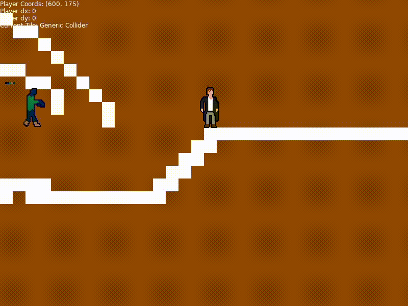

6th March, 2020
Remember how I said I wanted to start posting progress of my projects on the devlog? Well here you go!
Rather than go over the full changelog of things I've done on the game up until now, I'll post a quick video of the game in action:

Text!The garble in there is a note I made talking about my dialog files, they look like this:
Whenever something in brackets is hit, a new portrait is loaded. Every other line is rendered as text, and scanned through on a keypress.
There's a fair bit more that needs to be done, like making the dialog box itself, actually having portraits, and making the test scroll all nice-like. Not much else to report right now, but I'll see about posting progress here every so often. Thanks for reading!